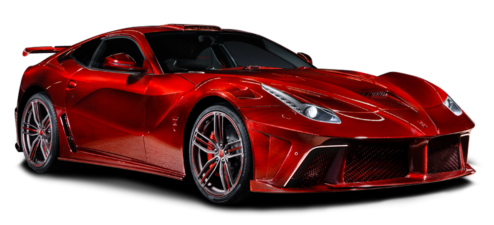
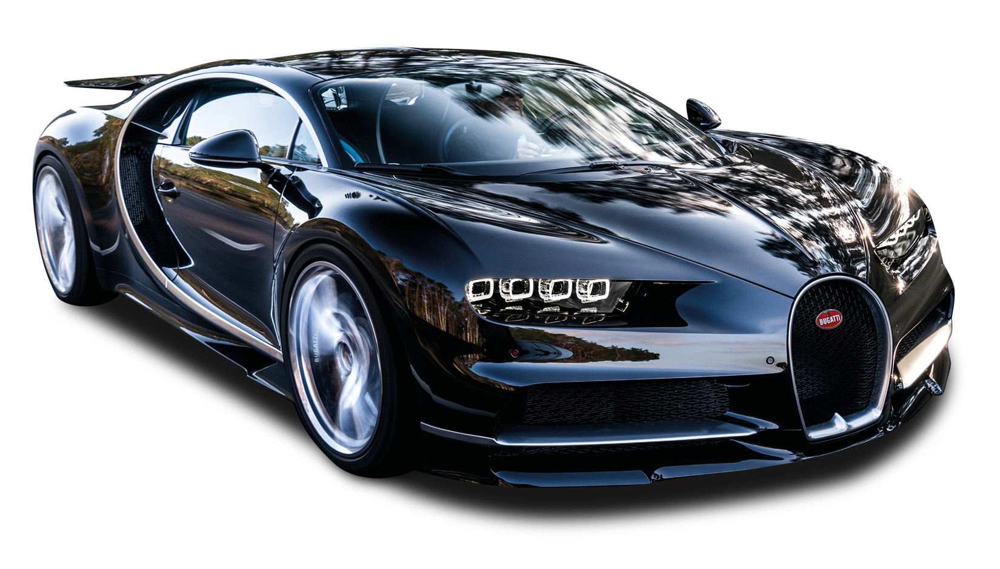

Mire se erdhet tek makinat sportive
Ketu do i gjeni disa makina sportive qe i ofron AutoSalloni jone.Shpresojme te ju pelqejne.
Aventador

Aventador makine sportive
Motori: 6.0L V12.Fuqia: 820 kuaj fuqi (horsepower).Shpejtesia maksimale: 320km/h. Shpejtesia (0-100 km/h): Rreth 2.8 sekonda
Transmisioni:Lloji: Automatik.Numri i marsheve: 8 marshe
Konsumi i karburantit: Mesatarisht: Rreth 12-14 litra per 100 km
Teknologjia dhe Opsionet: Ekrani virtual:Ekran dixhital me grafika te shkelqyera.Metodat e ngasjes: Sport,Sport+,Comfort.
Qmimi per Aventador: 1.000.000$
Motori: 6.0L V12.Fuqia: 820 kuaj fuqi (horsepower).Shpejtesia maksimale: 320km/h. Shpejtesia (0-100 km/h): Rreth 2.8 sekonda
Transmisioni:Lloji: Automatik.Numri i marsheve: 8 marshe
Konsumi i karburantit: Mesatarisht: Rreth 12-14 litra per 100 km
Teknologjia dhe Opsionet: Ekrani virtual:Ekran dixhital me grafika te shkelqyera.Metodat e ngasjes: Sport,Sport+,Comfort.
Qmimi per Aventador: 1.000.000$
Audi R8

Audi R8 GT makine sportive
Motori: 5.2L V10 atmosferik. Fuqia: 620 kuaj fuqi (horsepower). Shpejtesia maksimale: 329 km/h. Shpejtesia (0-100 km/h): Rreth 3.1 sekonda.
Transmisioni: Lloji: Automatik mundesi nderrimi te shpejtesive edhe ne timon. Numri i marsheve: 7 marshe. Sistemi i tërheqjes: Quattro.
Konsumi i karburantit: Mesatarisht: Rreth 13-14 litra për 100 km (varet nga menyra e ngarjes).
Teknologjia dhe Opsionet: Ekrani Virtual Cockpit: Ekran dixhital me grafika te shkelqyera. Sistemi audio: Bang & Olufsen me cilesi të larte. Modet e ngasjes: Sport,Comfort, Dynamic, dhe Individual.
Qmimi per Audi R8:180.000$
Motori: 5.2L V10 atmosferik. Fuqia: 620 kuaj fuqi (horsepower). Shpejtesia maksimale: 329 km/h. Shpejtesia (0-100 km/h): Rreth 3.1 sekonda.
Transmisioni: Lloji: Automatik mundesi nderrimi te shpejtesive edhe ne timon. Numri i marsheve: 7 marshe. Sistemi i tërheqjes: Quattro.
Konsumi i karburantit: Mesatarisht: Rreth 13-14 litra për 100 km (varet nga menyra e ngarjes).
Teknologjia dhe Opsionet: Ekrani Virtual Cockpit: Ekran dixhital me grafika te shkelqyera. Sistemi audio: Bang & Olufsen me cilesi të larte. Modet e ngasjes: Sport,Comfort, Dynamic, dhe Individual.
Qmimi per Audi R8:180.000$
Lamborghini
Lamborghini makine sportive
Motori: 6.2L V10.Fuqia: 900 kuaj fuqi (horsepower).Shpejtesia maksimale: 340km/h. Shpejtesia (0-100 km/h): Rreth 2.2 sekonda
Transmisioni:Lloji: Automatik.Numri i marsheve: 9 marshe
Konsumi i karburantit: Mesatarisht: Rreth 14 litra per 100 km
Teknologjia dhe Opsionet: Ekrani virtual:Ekran dixhital.Metodat e ngasjes: Sport,Sport+,Comfort.Viti prodhimit 2021
Qmimi per Lamborghini Hurran Coupe: 1.600.000$
Motori: 6.2L V10.Fuqia: 900 kuaj fuqi (horsepower).Shpejtesia maksimale: 340km/h. Shpejtesia (0-100 km/h): Rreth 2.2 sekonda
Transmisioni:Lloji: Automatik.Numri i marsheve: 9 marshe
Konsumi i karburantit: Mesatarisht: Rreth 14 litra per 100 km
Teknologjia dhe Opsionet: Ekrani virtual:Ekran dixhital.Metodat e ngasjes: Sport,Sport+,Comfort.Viti prodhimit 2021
Qmimi per Lamborghini Hurran Coupe: 1.600.000$
Koenigsegg CcX

Koenigsegg Agera RS makine e fuqishme sportive,Lloji motorit: 5.0L V8 twin-turbocharged (benzine).
2-dyresh,Shpejtësia maksimale: Mbi 447 km/h (është një nga veturat më të shpejta në botë),Shpejtesia (0-100 km/h): Vetëm 2 sekonda. Shpejtesia (0-300 km/h): Rreth 17.95 sekonda (rekord botëror për një kohë),Pesha: Rreth 1,395 kg (shumë e lehtë për një veturë me kaq shumë fuqi). Transmisioni: Automatik me 7 shpejtësi dhe paddle-shifters (mundesi nderrimi manual të shpejtesive).
Viti prodhimit 2024
Qmimi per Koenigsegg Agera RS: 4.900.000$
2-dyresh,Shpejtësia maksimale: Mbi 447 km/h (është një nga veturat më të shpejta në botë),Shpejtesia (0-100 km/h): Vetëm 2 sekonda. Shpejtesia (0-300 km/h): Rreth 17.95 sekonda (rekord botëror për një kohë),Pesha: Rreth 1,395 kg (shumë e lehtë për një veturë me kaq shumë fuqi). Transmisioni: Automatik me 7 shpejtësi dhe paddle-shifters (mundesi nderrimi manual të shpejtesive).
Viti prodhimit 2024
Qmimi per Koenigsegg Agera RS: 4.900.000$
Acura

Acura makine sportive,
Motori: 5.0L V8. Fuqia: 730 kuaj fuqi (horsepower).Shpejtesia maksimale: 335km/h. Shpejtesia (0-100 km/h): Rreth 2.9 sekonda
Transmisioni:Lloji: Automatik.Numri i marsheve: 7 marshe
Konsumi i karburantit: Mesatarisht: Rreth 10-11 litra per 100 km
Teknologjia dhe Opsionet: Ekrani virtual:Ekran dixhital.Metodat e ngasjes: Sport,Comfort.Viti prodhimit 2023
Qmimi per ACURA: 1.100.000$
Motori: 5.0L V8. Fuqia: 730 kuaj fuqi (horsepower).Shpejtesia maksimale: 335km/h. Shpejtesia (0-100 km/h): Rreth 2.9 sekonda
Transmisioni:Lloji: Automatik.Numri i marsheve: 7 marshe
Konsumi i karburantit: Mesatarisht: Rreth 10-11 litra per 100 km
Teknologjia dhe Opsionet: Ekrani virtual:Ekran dixhital.Metodat e ngasjes: Sport,Comfort.Viti prodhimit 2023
Qmimi per ACURA: 1.100.000$
Ferrari

Ferrari makine sportive
Motori: 6.6L V12.Fuqia: 978 kuaj fuqi (horsepower).Shpejtesia maksimale: 360km/h. Shpejtesia (0-100 km/h): Rreth 2 sekonda
Transmisioni:Lloji: Automatik.Numri i marsheve: 10 marshe
Konsumi i karburantit: Mesatarisht: Rreth 14-16 litra per 100 km
Teknologjia dhe Opsionet: Ekrani virtual:Ekran dixhital.Metodat e ngasjes: Sport,Sport+,Comfort.Viti prodhimit 2024
Qmimi per Ferrari: 1.000.000$
Motori: 6.6L V12.Fuqia: 978 kuaj fuqi (horsepower).Shpejtesia maksimale: 360km/h. Shpejtesia (0-100 km/h): Rreth 2 sekonda
Transmisioni:Lloji: Automatik.Numri i marsheve: 10 marshe
Konsumi i karburantit: Mesatarisht: Rreth 14-16 litra per 100 km
Teknologjia dhe Opsionet: Ekrani virtual:Ekran dixhital.Metodat e ngasjes: Sport,Sport+,Comfort.Viti prodhimit 2024
Qmimi per Ferrari: 1.000.000$
Porsche 911
Porsche 911 makine sportive,
Motori: 4.2L V16.Fuqia: 600 kuaj fuqi (horsepower).Shpejtesia maksimale: 300km/h. Shpejtesia (0-100 km/h): Rreth 3.5 sekonda
Transmisioni:Lloji: Automatik.Numri i marsheve: 7 marshe
Konsumi i karburantit: Mesatarisht: Rreth 10-11 litra per 100 km
Teknologjia dhe Opsionet: Ekrani virtual:Ekran dixhital.Metodat e ngasjes: Sport,Comfort,Dyanmic,Individual.Viti prodhimit 2023
Qmimi per Porshce 911:90.0000$
Motori: 4.2L V16.Fuqia: 600 kuaj fuqi (horsepower).Shpejtesia maksimale: 300km/h. Shpejtesia (0-100 km/h): Rreth 3.5 sekonda
Transmisioni:Lloji: Automatik.Numri i marsheve: 7 marshe
Konsumi i karburantit: Mesatarisht: Rreth 10-11 litra per 100 km
Teknologjia dhe Opsionet: Ekrani virtual:Ekran dixhital.Metodat e ngasjes: Sport,Comfort,Dyanmic,Individual.Viti prodhimit 2023
Qmimi per Porshce 911:90.0000$
Bugatti Chiron

Bugatti Chiron makine e fuqishme sportive
Motori: 8.2L V14.Fuqia: 999 kuaj fuqi (horsepower).Shpejtesia maksimale: 399km/h. Shpejtesia (0-100 km/h): Rreth 1.9 sekonda
Transmisioni:Lloji: Automatik.Numri i marsheve: 12 marshe
Konsumi i karburantit: Mesatarisht: Rreth 18-19 litra per 100 km
Teknologjia dhe Opsionet: Ekrani virtual:Ekran dixhital.Metodat e ngasjes: Sport,Sport+,Comfort,Idividual,Dynamic.Viti prodhimit 2024
Qmimi per Bugatti Chiron: 4.000.000$
Motori: 8.2L V14.Fuqia: 999 kuaj fuqi (horsepower).Shpejtesia maksimale: 399km/h. Shpejtesia (0-100 km/h): Rreth 1.9 sekonda
Transmisioni:Lloji: Automatik.Numri i marsheve: 12 marshe
Konsumi i karburantit: Mesatarisht: Rreth 18-19 litra per 100 km
Teknologjia dhe Opsionet: Ekrani virtual:Ekran dixhital.Metodat e ngasjes: Sport,Sport+,Comfort,Idividual,Dynamic.Viti prodhimit 2024
Qmimi per Bugatti Chiron: 4.000.000$
Pagani Zonda
Pagani Zonda makine sportive e fuqishme,Lloji i motorit: 5.3L V12 Turbo(benzine,hybrid)
eshte 2-dyresh Shpejtesia Maksimale:Mbi 370km/h,Shpejtesia(0-100km/h):Vetem 3 sekonda,HorsePower 900+,Transmisioni:Automatik 8shpejtesi,FULL CARBON,
Viti prodhimit 2022
Qmimi per Pagani Zonda: 600.000$
eshte 2-dyresh Shpejtesia Maksimale:Mbi 370km/h,Shpejtesia(0-100km/h):Vetem 3 sekonda,HorsePower 900+,Transmisioni:Automatik 8shpejtesi,FULL CARBON,
Viti prodhimit 2022
Qmimi per Pagani Zonda: 600.000$
Ferrari 458 Italia
Ferrari 458 Italia
Specifikimet teknike:
Motor: 4.5L V8 atmosferik.
Fuqia: 570 kuajfuqi 9,000 RPM.
Shpejtësia maksimale: 325 km/h.
Shpejtesia: 0-100 km/h për 3.4 sekonda.
Veçoritë sportive: Ferrari 458 është i njohur për ndërrimin tepër të shpejtë të marsheve (7-speed dual-clutch) dhe një dizajn aerodinamik që ndihmon në stabilitetin në shpejtësi të larta.
Përdorimi i teknologjisë nga Formula 1 dhe sistemi E-Diff (diferencial elektronik) e bën këtë makinë një supercar të jashtëzakonshëm për pistë dhe rrugë.
Qmimi: 650.000$
Veçoritë sportive: Ferrari 458 është i njohur për ndërrimin tepër të shpejtë të marsheve (7-speed dual-clutch) dhe një dizajn aerodinamik që ndihmon në stabilitetin në shpejtësi të larta.
Përdorimi i teknologjisë nga Formula 1 dhe sistemi E-Diff (diferencial elektronik) e bën këtë makinë një supercar të jashtëzakonshëm për pistë dhe rrugë.
Qmimi: 650.000$
Ferrari F12 LaFerrari

Ferrari F12 Berlinetta
Specifikimet teknike:
Motor: 6.3L V12 atmosferik. Fuqia: 730 kuajfuqi @ 8,250 RPM.Shpejtësia maksimale: 340 km/h.Shpejtesia: 0-100 km/h për 3.1 sekonda.
Veçoritë sportive:
F12 Berlinetta është një nga modelet më të fuqishme V12 të Ferrari-t.
Ajo kombinon një strukturë të lehtë (alumini) me një qendër gravitacioni të ulët, duke e bërë atë të përshtatshme për kthesa me shpejtësi të lartë. Sistemi i frenimit karbon-keramik siguron ndalje të sigurt në çdo moment.
Qmimi:1.000.000$
Ajo kombinon një strukturë të lehtë (alumini) me një qendër gravitacioni të ulët, duke e bërë atë të përshtatshme për kthesa me shpejtësi të lartë. Sistemi i frenimit karbon-keramik siguron ndalje të sigurt në çdo moment.
Qmimi:1.000.000$
Ferrari 488

Ferrari 488 GTB
Specifikimet teknike:Motor: 3.9L V8 turbocharged.
Fuqia: 661 kuajfuqi 8,000 RPM.Shpejtësia maksimale: 330 km/h.
Shpejtesia: 0-100 km/h për 3.0 sekonda.
Veçoritë sportive: Ferrari 488 GTB ofron performancë të përmirësuar në krahasim me 458, falë turbo-kompresorëve të dyfishtë.
Me një sistem të avancuar aerodinamik dhe veçori si Side Slip Control 2 (kontrolli i rrëshqitjes anësore), ajo garanton eksperiencë sportive edhe për shoferët më pak me përvojë.
Qmimi:650.000$
Veçoritë sportive: Ferrari 488 GTB ofron performancë të përmirësuar në krahasim me 458, falë turbo-kompresorëve të dyfishtë.
Me një sistem të avancuar aerodinamik dhe veçori si Side Slip Control 2 (kontrolli i rrëshqitjes anësore), ajo garanton eksperiencë sportive edhe për shoferët më pak me përvojë.
Qmimi:650.000$
Ferrari 430

Ferrari F430
Specifikimet teknike:
Motor: 4.3L V8 atmosferik.
Fuqia: 483 kuajfuqi 8,500 RPM.
Shpejtësia maksimale: 315 km/h.
Shpejtesia: 0-100 km/h për 4.0 sekonda.
Veçoritë sportive:
Një klasik modern, F430 është një supercar i fuqishëm, por me një qasje më tradicionale.
Përdorimi i diferencialit elektronik (E-Diff) dhe sistemit të kontrollit të stabilitetit i ndihmon shoferët të mbajnë kontrollin gjatë manovrave të forta.
Qmimi:300.000$
Përdorimi i diferencialit elektronik (E-Diff) dhe sistemit të kontrollit të stabilitetit i ndihmon shoferët të mbajnë kontrollin gjatë manovrave të forta.
Qmimi:300.000$
Mc Laren

Specifikimet teknike:
Motor: 3.8L V8 twin-turbocharged + motor elektrik.
Fuqia totale: 903 kuajfuqi (727 kuajfuqi nga motori V8 + 177 kuajfuqi nga motori elektrik).
Shpejtësia maksimale: 350 km/h (e kufizuar elektronikisht).
Shpejtësia: 0-100 km/h për 2.8 sekonda.
Veçoritë sportive:
Hybrid hypercar: McLaren P1 kombinon fuqinë e një motori tradicional V8 me teknologjinë elektrike për të ofruar performancë ekstreme, por edhe efikasitet më të mirë në disa situata.
Materiale të avancuara: Struktura është ndërtuar nga fibra karboni ultra të lehtë dhe materiale kompozite, duke e bërë atë shumë të lehtë dhe të qëndrueshme.
Modaliteti Race: Aktivizon një konfigurim ultra-sportiv duke ulur maksimale qendrën e gravitetit dhe rritur aerodinamikën për përdorim në pista.
Qmimi:151.000$
Materiale të avancuara: Struktura është ndërtuar nga fibra karboni ultra të lehtë dhe materiale kompozite, duke e bërë atë shumë të lehtë dhe të qëndrueshme.
Modaliteti Race: Aktivizon një konfigurim ultra-sportiv duke ulur maksimale qendrën e gravitetit dhe rritur aerodinamikën për përdorim në pista.
Qmimi:151.000$
McLaren 540C
McLaren 540C
Specifikimet teknike:
Motor: 3.8L V8 twin-turbocharged.
Fuqia: 540 kuajfuqi 7,500 RPM.
Shpejtësia maksimale: 320 km/h.
Shpejtesia: 0-100 km/h për 3.5 sekonda.
Veçoritë sportive:
Është modeli hyrës në linjën e supercar-ve të McLaren, por përsëri ofron një eksperiencë të pashembullt sportive.
Struktura monokok nga fibra karboni ndihmon në uljen e peshës dhe rritjen e performancës në kthesa.
Qmimi:140.000$
Struktura monokok nga fibra karboni ndihmon në uljen e peshës dhe rritjen e performancës në kthesa.
Qmimi:140.000$
Mc Laren 12C
McLaren MP4-12C (12C)
Specifikimet teknike:
Motor: 3.8L V8 twin-turbocharged.
Fuqia: 592 kuajfuqi @ 7,000 RPM.
Shpejtësia maksimale: 333 km/h.
Akselerimi: 0-100 km/h për 3.1 sekonda.
Veçoritë sportive:
Një nga makinat e para moderne të McLaren-it, MP4-12C ka teknologji të avancuar si ProActive Chassis Control, që siguron një drejtim të shkëlqyer pa sakrifikuar komoditetin.
Qmimi:170.000$
Qmimi:170.000$
Mc Laren 570S

McLaren 570S
Specifikimet teknike:
Motor: 3.8L V8 twin-turbocharged.
Fuqia: 562 kuajfuqi 7,500 RPM.
Shpejtësia maksimale: 328 km/h.
Shpejtesia: 0-100 km/h për 3.2 sekonda.
Veçoritë sportive:
Një kombinim perfekt i fuqisë, lehtësisë dhe manovrimit, me një sistem frenimi të avancuar dhe aerodinamikë optimale për shpejtësi të larta.
Qmimi:190.000$
Qmimi:190.000$
Range Rover

Range Rover Sport
Specifikimet teknike:
Motorë të ndryshëm: 3.0L V6 deri në 5.0L V8 supercharged.
Fuqia: Deri në 575 kuajfuqi në versionin SVR.
Shpejtësia maksimale: 280 km/h (SVR).
Shpejtësia: 0-100 km/h për 4.5 sekonda (SVR).
Veçoritë sportive:
Për një SUV, Range Rover Sport kombinon luksin me performancën.
Versionet si SVR janë të dizajnuara për të ofruar eksperiencë sportive, ndërsa ruajnë aftësitë off-road të markës.
Qmimi:76.000$
Versionet si SVR janë të dizajnuara për të ofruar eksperiencë sportive, ndërsa ruajnë aftësitë off-road të markës.
Qmimi:76.000$
Sport Porsche

Porsche 911 Carrera (Sport)
Specifikimet teknike:
Motor: 3.0L turbocharged boxer-6.
Fuqia: 379-640 kuajfuqi (në varësi të modelit).
Shpejtësia maksimale: Deri në 330 km/h.
Shpejtësia: 0-100 km/h për 3.2 sekonda (Turbo S).
Veçoritë sportive:
Porsche 911 ofron një përvojë të jashtëzakonshme drejtimi me shpërndarje perfekte të peshës dhe sistem drejtimi të avancuar (Porsche Active Suspension Management - PASM).
Qmimi:190.000$
Qmimi:190.000$
Koenigseg White Agera

Koenigsegg Agera RS
Specifikimet teknike:
Motor: 5.0L V8 twin-turbo.
Fuqia: Deri në 1,160 kuajfuqi.
Shpejtësia maksimale: Mbi 400 km/h.
Shpejtësia: 0-100 km/h për 2.8 sekonda.
Veçoritë sportive:
E përqendruar plotësisht në performancë ekstreme, Agera RS përdor materiale ultra të lehta dhe aerodinamikë të sofistikuar për të thyer rekorde botërore në shpejtësi.
Qmimi:4.900.000$
Qmimi:4.900.000$
Koenigseg CcxR
Koenigsegg CCXR
Specifikimet teknike:
Motor: 4.8L V8 twin-supercharged.
Fuqia: Deri në 1,018 kuajfuqi.
Shpejtësia maksimale: 395 km/h.
Akselerimi: 0-100 km/h për 3.1 sekonda.
Veçoritë sportive:
CCXR është një ndër makinat e para që mbështet karburantin bio-ethanol, duke kombinuar performancën ekstreme me përpjekje për qëndrueshmëri mjedisore.
Nëse dëshiron krahasime specifike mes modeleve.
Qmimi:4.000.000$
Nëse dëshiron krahasime specifike mes modeleve.
Qmimi:4.000.000$